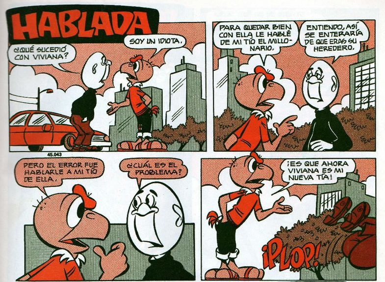

LAS HISTORIETAS:¿QUE SON?ES UNA SUCESIÓN DE DIBUJOS QUE CONSTITUYEN UN RELATO, QUE PUEDE INCLUIR TEXTO O NO, QUE INCLUYE EL MEDIO DE COMUNICACIÓN MASIVA COMO SON LAS REVISTAS COMO ESTA, ES CONDORITO ES UN COMIC CON POCO TEXTO Y AUN ASI SE PUEDE ENTENDER DE FORMA AGRADABLE, ADEMAS ESE COMIC LLEVA UNA ESTRUCTURA NO TAN SENCILLA.
ESTRUCTURA:BUENO ALGUNOS DE SUS IMPLEMENTOS LOS VEREMOS AQUI, VERDAD "CJ"
DIBUJOS
ONOMATOPEYAS
VIÑETAS
SECUENIAS
DIALOGOS
GLOBOS CON BURBUJA
Y MUCHO MAS...
CARACTERISTICAS:
ES UN MEDIO DE COMUNICACIÓN MASIVA
HAY UN PERSONAJE PRINCIPAL EN LA CUAL LA HISTORIETA GIRA ENTORNO A EL Y SUS AVENTURAS
ES DE CARACTER NARRATIVO CONSIDERANDO QUE TIENE LA PRESENCIA DE UN NARRADOR